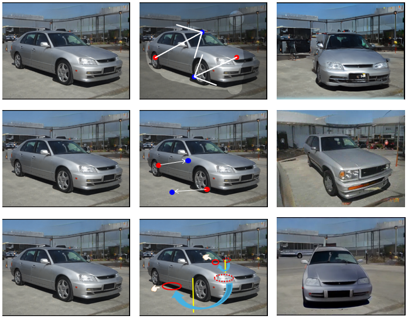
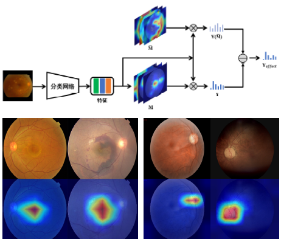

Hi, I am Pan Aoxuan and I am currently working in a company as a image processing engineer. I got my bachelor degree from the University of Chinese Academy of Sciences in 2020 and my master degree in 2023 from the Institute of Computing Technology, Chinese Academy of Sciences where I was advised by Prof. Lin Gao on medical image analysis. I'm particularly interested in generative technologies, including image, video, and 3D model generation. Feel free to reach out if you have interesting ideas to discuss!
My research interests are in the field of 3D reconstruction and medical image analysis.
I am enthusiastic about generative models and their applications in 3D generation and video generation, and I am really excited about a future where stories from novels can be brought to life as cinematic videos, generated purely from text.

Lift, Edit and Drop Yuhuan Xie, Aoxuan Pan, Mingxian Lin, Wei Huang, Yi-Hua Huang, Xiaojuan Qi Submitted, 2025
A 3D-aware image editing framework that allows users to perform large-scale image editing tasks while maintaining the 3D consistency of the image.

Research on Fundus Image Classification Method Based on Multi-level Clustering and Casusal Learning Aoxuan Pan Thesis, 2023
We developed a new way to classify eye images (fundus) by using hierarchical clustering to group similar features and a causal learning-based attention module to make sure the model focuses on the most important parts. This makes our classifications more accurate and explainable.
{kind=link}